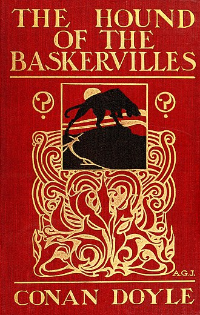
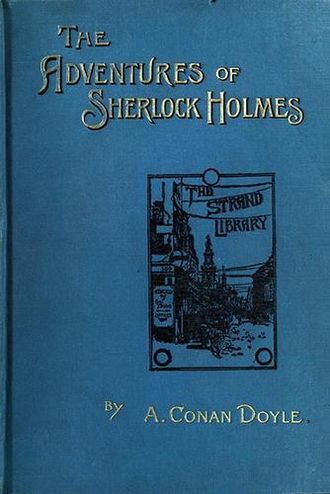

The 3 Mistakes of My Life is the third novel written by Chetan Bhagat. The book was published in May 2008
and had an initial print run of 420,000. The novel follows the story of three friends and is based on the
city of Ahmedabad in western India. This is the third best-selling novel by Chetan Bhagat.
2 States-The Story Of My Marriage
Chetan Bhagat
2 States: The Story of My Marriage is autobiographical with only names changed. The story is about a couple
Krish and Ananya, who hail from two states of India, Punjab and Tamil Nadu, respectively, who are deeply in
love and want to marry. It is narrated from a first-person point of view in a humorous tone, often taking
digs at both Tamil and Punjabi cultures.
Harry Potter and the Chamber of Secrets
J. K. Rowling
Harry Potter and the Chamber of Secrets is a fantasy novel written by British author J. K. Rowling and the
second novel in the Harry Potter series. The plot follows Harry's second year at Hogwarts School of
Witchcraft and Wizardry, during which a series of messages on the walls of the school's corridors warn that
the "Chamber of Secrets" has been opened and that the "heir of Slytherin" would kill all pupils who do not
come from all-magical families..
Harry Potter and the Philosopher's Stone
J. K. Rowling
Harry Potter and the Philosopher's Stone is a 1997 fantasy novel written by British author J. K. Rowling.
The first novel in the Harry Potter series and Rowling's debut novel, it follows Harry Potter, a young
wizard who discovers his magical heritage on his eleventh birthday, when he receives a letter of acceptance
to Hogwarts School of Witchcraft and Wizardry.
Sherlock holmes Hound_of_Baskervilles

Arthur Conan Doyle
The Hound of the Baskervilles is the third of the four crime novels by British writer Arthur Conan Doyle
featuring the detective Sherlock Holmes. Originally serialised in The Strand Magazine from August 1901 to
April 1902, it is set in 1889 largely on Dartmoor in Devon in England's West Country and tells the story of
an attempted murder inspired by the legend of a fearsome, diabolical hound of supernatural origin.
The Adventures of sherlock holmes

Arthur Conan Doyle
The Adventures of Sherlock Holmes is a collection of twelve short stories by British writer Arthur Conan
Doyle, first published on 14 October 1892. It contains the earliest short stories featuring the consulting
detective Sherlock Holmes, which had been published in twelve monthly issues of The Strand Magazine from
July 1891 to June 1892.